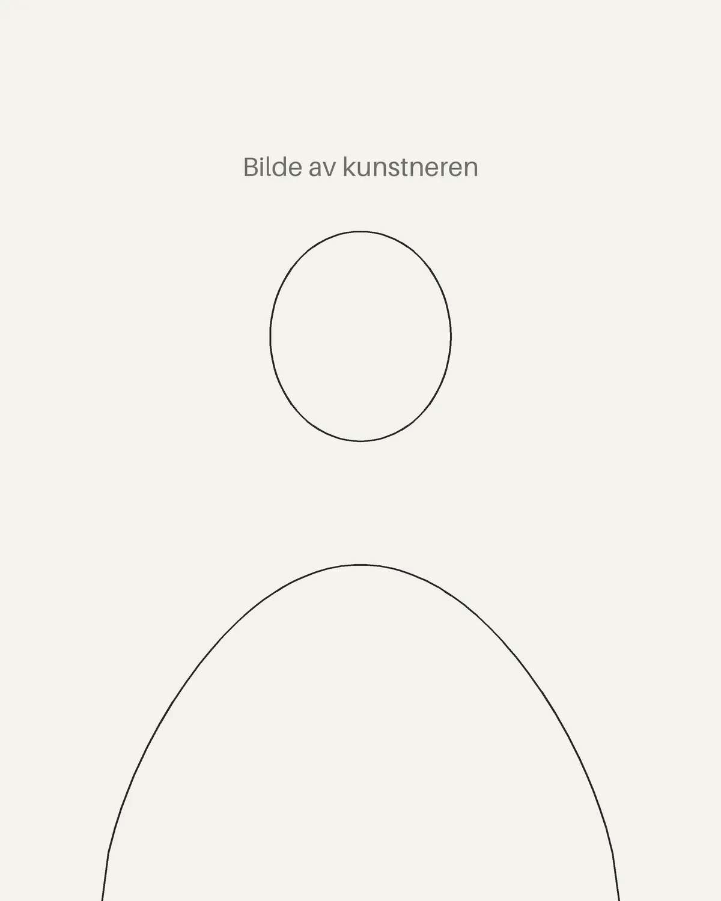

Om kunstneren
Strek for strek

[Kort innledning: hvem kunstneren er, og hva som driver arbeidet. To–tre setninger holder.]
[Kunstnerens navn] tegner med tynne, svarte tusjer på hvitt papir. Hver tegning bygges opp av tusenvis av små streker, og kan ta fra noen dager til flere uker å fullføre. Det finnes ingen skisse under og ingen viskelær, så hver strek blir stående.
[Skriv litt om motivene: hva kunstneren ser etter, hvor ideene kommer fra, og hvorfor tusj og papir.]
Alle tegningene som selges her er originaler. Det lages ingen trykk eller kopier, så når en tegning er solgt, finnes den bare hos den nye eieren.
Materialer
[F.eks.: Pigmentbasert tusj i strekbredder fra 0,03 til 0,5 mm, på syrefritt papir som tåler lys og tid.]
Kontakt
Spørsmål om et verk, bestillinger eller utstillinger? Skriv til [epost@eksempel.no].
[Kunstnerens navn]